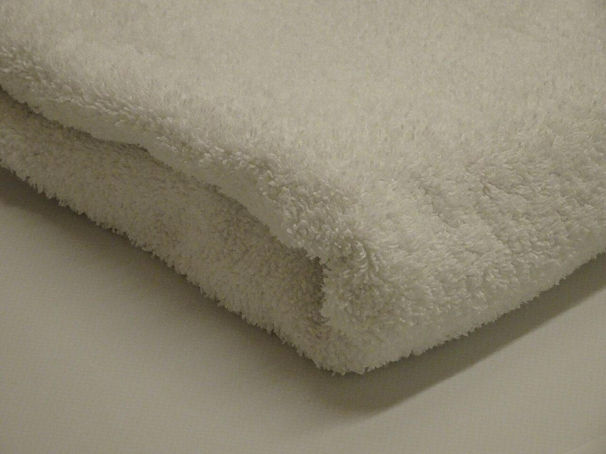

店のこと
店のこと
お店について確認できているのは、所在地・電話番号・Instagramのアカウントだけです。
このページの「想像してみる」部分は、制作側が想像して書いたものです。お店の実際の様子・考え・メニューとは関係がありません。
確認できていること
- 店名は「セカイスケッチコーヒー」、業種はカフェ
- 所在地は山形県長井市本町２丁目２−１５(〒993-0007)
- 電話番号は0238-88-7457
- Instagramのアカウントは @sekaisketchcoffee
- 営業時間・定休日・メニュー・価格・ご予約・駐車場は準備中

想像してみる
「スケッチ」という名前から
由来は分かりません。制作側は、見たものを紙の上に写し取る「スケッチ」の手つきから、日々の暮らしの小さなものを丁寧に見つめるお店かもしれない、と想像しました(実際のお店の姿ではありません)。そのため、下の写真も景色ではなく、豆・道具・布・石といった物のクローズアップだけを選んでいます。



三分割の読み方
縦に二本、横に二本。
三分割は、画面を縦横それぞれ三等分する線で、四つの交点ができます。主役を中央ではなく交点へずらすと、余白が生まれます。このサイトの写真に引いた橙の線と丸は、その目安です。お店とは関係なく、制作側が見やすさのために加えた飾りです。